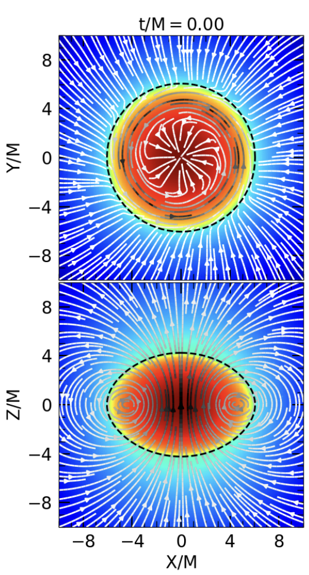
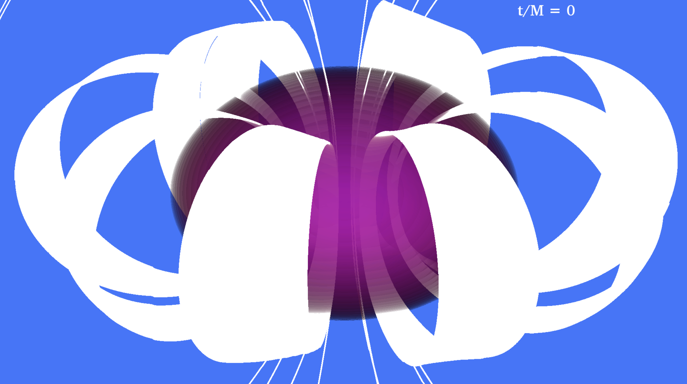
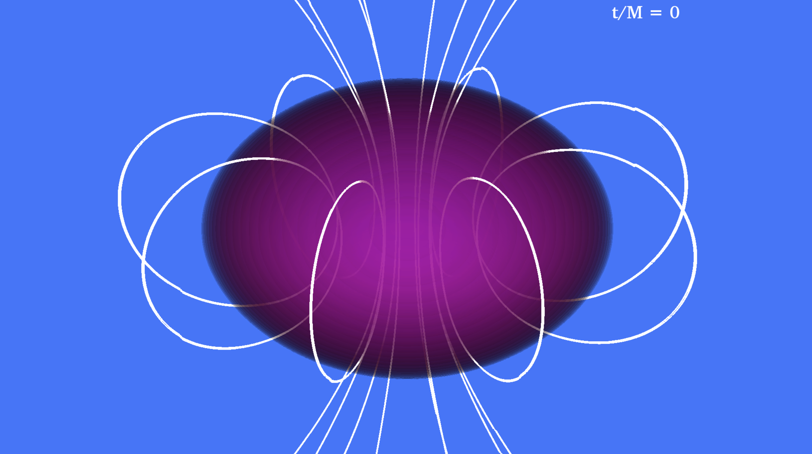
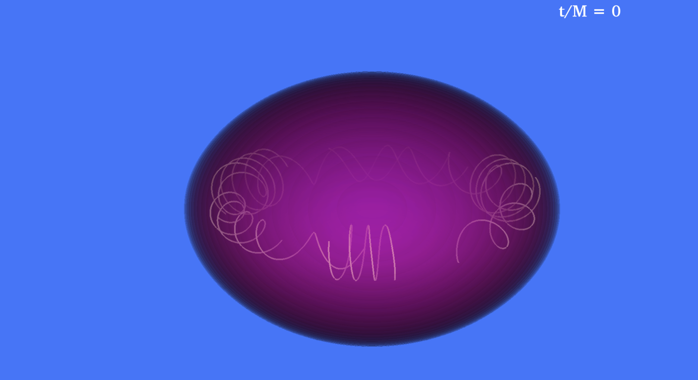
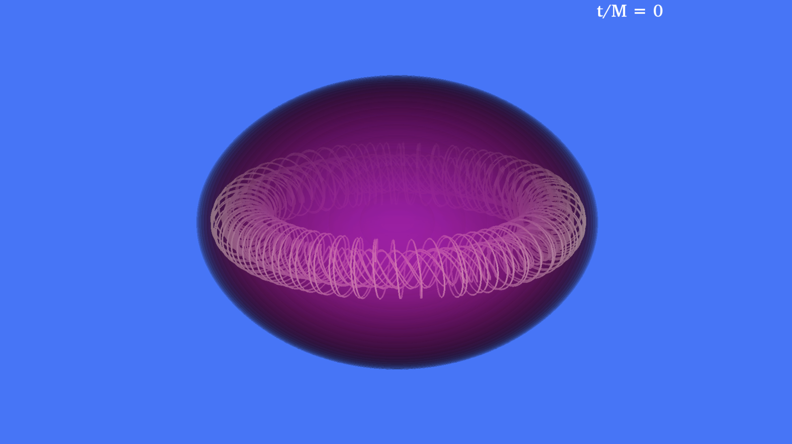
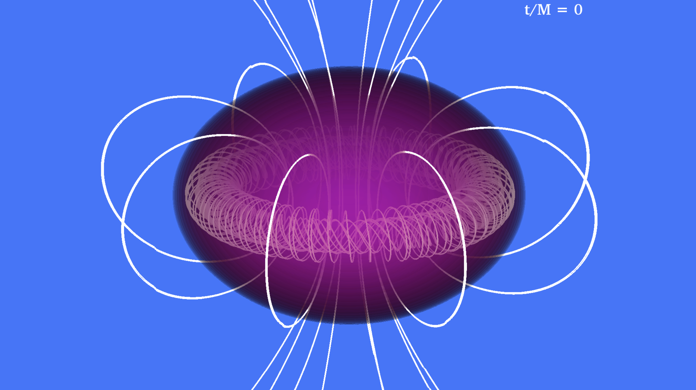

Case Study: Magnetars
The first case study will be of a highly magnetized rotating neutron star, called a magnetar. These magnetars correspond to the simulations discussed in [9, 10] and describe the first magnetohydro- dynamic simulations in full general relativity of self-consistent rotating neutron stars (NSs) with ultrastrong mixed poloidal and toroidal magnetic fields. The visualizations of magnetars will use the following simulation output databases:
rho_b.file_*.h5:HDF5 data of the fluid rest-mass density $\rho_0$Bx.file *.h5, By.file *.h5, Bz.file *.h5:HDF5 data of the magnetic fieldparticles.mon:ASCII file containing the locations of a number of fluid particles
Using these databases, we will make the following plots:
- Isosurface of Volume plot of log$\left(\frac{\rho_0}{\rho_0(0)}\right)$, which will visualize the rotating neutron star (purple in Fig. 49). Here, we normalize by ρ0 (0) which is the maximum density at $t = 0$
- Integral curve plot of the poloidal field lines seeded by particles.
- Integral curve plot of the toroidal field lines seeded by particles.
Creating an isosurface plot of the density follows the same procedure as in section 5.2. Other case studies will go more in-depth into density plotting as well. In this case study, we will focus on the plotting of magnetic field lines which is more complicated than in a typical dipole-like configuration, due to the simultaneous existence of poloidal and toroidal magnetic fields.
Creating 2D slice plots of the density and magnetic fields, will make the process of finding points to seed the magnetic field lines easier, since it allows us to gauge the size of the system and the nature of the magnetic fields. The fact that the configuration is axisymmetric allows to choose any meridional slice that intersects the origin. We select the z-x plane. The other slice lies in the x-y plane(the equator). For example, in Fig. 46, we see that the toroidal portion of the magnetic field is strongest near the outer edge of the star (black field lines), thus when choosing where we want to place seed points for the toroidal field lines, we should choose seed points at the outer edge of the star and close to the equatorial plane z = 0. Likewise, we can see that the poloidal portion of the magnetic field is strongest near the center of the star, thus we should pick seed points close to the center for the poloidal field lines. Here, it is important to pick seed points inside the neutron star, since the next step would be to find the particle seeds closest to the chosen seed points. The grid is finer inside the neutron star, so choosing particles inside the neutron star will give us more accurate results.
Without 2D slice plots this experimentation process for finding seed points will just take longer. However, we should have a general sense of the size of the system and how the magnetic field behaves. This is especially true when we have mixed poloidal and toroidal magnetic fields. Overall the process of finding proper seed points for magnetic field lines involves starting from an educated guess based on some information about the system, followed by lots of experimentation and fine-tuning of the seed points and the integral curve settings. Below, we provide some examples of some steps taken before creating a final image.

Figure 46: 2D slices of a magnetar. Adapted from [9].
Poloidal Field Lines
We will start by finding good seed points for the poloidal field lines. We pick rings of seed points near the center of the star since that is where the poloidal magnetic field is the strongest. To do this, we use seed maker.py (Code Lst. 5.3.1) with
centers = [(0., 0., 0.), (0., 0., 0.)],pairs = [(2.5, 1.), (1., 1.)],spins = [(0., 0., 1.), (0., 0., 1.)],num_seeds_per_ring = [8,8], andoffsets = [0., 0.]
to generate the seed points. Note that the center of the neutron star is at the origin and its angular momentum is in the +z direction. We start with rings of radii 2.5 and 1, which are close to the center of the neutron star whose radius is 8.3. For the integral curve settings, we started by using the $integrationType=RK4$ integrator with $maxSteps=50000$ and $maxStepLength=100.$ These seed points and settings give us the image on the left side of Fig. 47.
There are a few issues that we hope to fix with this image. First, the field lines are looping around too many times to the point where they look like ribbons (see Fig 47(a)). Ideally, we would want the field lines to integrate in a loop once. To fix this issue, we want to decrease the length of the field lines, which can be done by decreasing the number of steps by changing $maxSteps$ and by decreasing the step size by changing $maxStepLength.$ We decreased the number of steps from 50000 to 2000 and decreased the step size from 100 to 10.
Sometimes, the opposite problem can happen, where the field lines are too short and need to be integrated further. This happens either when the field line integrates into a critical point of the magnetic field, or when it has already integrated $maxSteps$. In the former case, VisIt will output error messages to let you know. The best way to circumvent this issue is to increase the $maxStepLength$ or to use a different integrator. In the latter case, we can simply increase $maxSteps.$
Additionally, we would like to have the field lines generated by the ring of seed points with the larger radius to form closed loops that are smaller, thus we will increase the radius of that ring of points from 2.5 to 3.
The changes we made above were the result of multiple different trials where each tested a different setting. We want to stress that the key to this process is experimentation. At first, we should get familiar with how each setting affects the plot by changing only one setting at a time. However, with more experience, we will develop more intuition regarding different settings. The changes we’ve made, give us the image on the right side of Fig. 47(b).
modify two figures here 

Figure 47: Poloidal field lines with different settings.
Toroidal Field Lines
Since toroidal field lines integrate around the entire star (i.e. will cover all angles of ϕ), instead of forming closed loops that don’t intersect, we will not be using as many points in our rings as in the poloidal case. We will create two rings with radii close to the outer edge of the star and a height of zero. The settings in seed maker.py are
centers = [(0., 0., 0.), (0., 0., 0.)],pairs = [(5., 0.), (5.5, 0.)],spins = [(0., 0., 1.), (0., 0., 1.)],num_seeds_per_ring = [3,3], andoffsets = [0., 0.]
with reflectZ = False since we are picking a height of zero. For the integral curve settings, we will start with the integrationType=RK4, maxSteps=500, and maxStepLength=10. These seed points and settings give us the image in Fig. 48(a).
This image looks quite nice already since we are using almost the same integration settings we found for the poloidal field lines. However, the coils of field lines don’t integrate all the way around the star. To address this, we increase the number of steps from 500 to 5000. The changes we’ve made give us the image on the right side of Fig. 48.

(a) Before changes

(b) After changes
Figure 48: Toroidal field lines with various settings.
Final Image and Summary

Figure 49: A magnetar with mixed poloidal and toroidal field lines.
Combining the poloidal and toroidal field lines we’ve created we get the final image in Fig. 49. In this section, we discussed the steps taken to draw magnetic field lines with mixed poloidal and toroidal magnetic fields.
- The first step is to get a general understanding of the nature of the system and its magnetic fields. In this example, we knew from the 2D slice plots that the poloidal portion of the magnetic field was the strongest at the center of the star and that the toroidal portion was strongest near the outer edge of the star
- Using this information, we used picked points in the center (outer edge) of the star to seed poloidal (toroidal) magnetic field lines. To create an initial image, we used some arbitrary integral curve settings to serve as a default.
- After drawing the image using the first round of settings, we noticed what we need to tweak the seed points and integral curve for a better result. This step is usually carried out multiple times before we have an image that we are satisfied with.
Some of the settings that are commonly changed/tuned to achieve a nice final image are listed below.
num seeds per ring: Number of loops For the poloidal field lines Fig. 47, more seeds in a ring will increase the number of loops distributed across the ϕ angle. For toroidal field lines Fig. 48, it will increase the number of field line “coils”, since every seed integrated long enough will produce a full “coil”.
(radius, height) pairs: Choosing which magnetic field portion to visualize Ideally, we’ll have 2D slice plots so we can choose which portions of the magnetic field to visualize with our field lines. For less complicated purely poloidal magnetic fields, smaller radii create the largest rings while larger radii (up until the radius where the magnetic field switches directions) create smaller rings.maxStepLength and integrationType: Avoiding critical points in the magnetic field If our field lines are integrating into critical points, then they will terminate. To troubleshoot this issue, we can increase the maximum step length to integrate across these problem areas. We can also try different integrators (e.g. RK4, Leapfrog, DormandPrince).maxSteps and maxStepLength:: Create closed rings If our field lines are not integrating into critical points, then we can increase the number of steps or the step length so that they integrate into closed loops. Note that it is also possible to over-integrate. Since the magnetic field has a toroidal component, subsequent loops will increase the ‘thickness’ of the ring.
Finally, to create visualizations at times after the initial time, we can use the same integration settings as we use at the initial time. For the seed points, like described earlier, we choose the nearest particles to each of our seed points, and use these particles as to seed the magnetic field lines at all subsequent times.